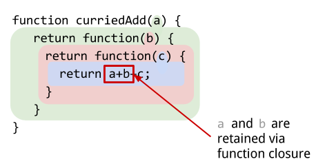

在这篇文章中，我们将介绍 Javascript 函数式编程中几种常见技术：Currying(柯里化) vs Partial Application(偏函数应用)。您不需要使用函数式编程的背景来理解这些内容，所以不必担心。
关于函数式编程的快速回顾
我假设你对 Javascript 中的函数已经有了一个基本的了解，包括高阶函数，闭包 和 call & apply ;如果你还不了解这些，那么请你快速去了解这些主题后再回来看这篇文章。
现在回来，让我们先回顾几个要点，然后再继续阅读。
Arity（参数数量） 指的是一个函数可以接受的参数的数量。这可能是一个没有，一个(unary)，两个(二进制)或更多(多值)。您还可以使用具有可变数量参数的函数(variadic(可变参数)函数)。
函数允许您通过函数的 .length 属性来访问它们的参数数量。函数的 .length 属性永远不会改变 – 该属性总是匹配函数的声明参数的数量。
- function howMany(a,b,c) {
- console.log(howmany.length);
- }
- howMany(1,2); // 3
- howMany(1,2,3,4); // 3
显然，你和你的函数要正确处理参数太少和太多的情况。
variadic(可变参数) 函数是指参数数量可变的那些函数。
Javascript 允许我们通过函数作用域内可用的 arguments 变量来访问传递给函数的所有参数。arguments 变量是一个包含函数调用时传递给该函数的所有参数的 类数组(array-like) 列表。
所谓 类数组(array-like) 是一个列表，它只有一个 .length 属性，没有真正数组的其他属性。你可以通过索引 [] 来访问它，获取他的 .length 属性, 并使用循环语句迭代它 。
但是，我们可以将其转换为“真实”数组，下面的代码将使参数列表对我们更加有用：
- function showArgs() {
- var args = [].slice.call(arguments);
- }
[].slice.call(arguments) 是 Array.prototype.slice.call(arguments) 的简写方式，我们只是利用了数组字面量的用法。
在 ES6 中，我们可以通过 spread operator(扩展操作) / rest parameters(剩余参数) 的帮助更容易地访问和“解开”我们的参数：
- function howMany(...args) {
- console.log("args:", args, ", length:", args.length);
- }
- howMany(1,2,3,4); // args: [1,2,3,4], length: 4 (a "real" array)!
所有这一切，我相信你已经知道了 – 那么我们可以继续我们的话题了！
Currying(柯里化)
Currying(柯里化) 是把一个接受 N 个参数的函数转换成接受一个单一参数（最初函数的第一个参数）的函数，并且返回接受余下的参数而且返回结果的新函数的技术。也就是说每个函数都接受1个参数。
比如 我们有一个 add() 函数接受 3 个参数并返回总和，
- function add(a,b,c) { return a+b+c; }
我们可以把它转换成一个 Currying(柯里化) 函数，如下：
- function curriedAdd(a) {
- return function(b) {
- return function(c) {
- return a+b+c;
- }
- }
- }
Currying(柯里化) 是如何工作？它的工作方式是通过为每个可能的参数嵌套函数，使用由嵌套函数创建的自然闭包来保留对每个连续参数的访问。如图所示：

当然我们想要的是一种轻松地办法，可以将现有的带 N 个参数的函数转换成它的 Currying(柯里化) 版本，而不用像 curriedAdd() 那样写出每个函数 的 Currying(柯里化) 版本。
我们来看看我们是否可以分解这个，并构建一些有用的东西。
编写一个通用的 curry()
理想情况下，这是我们想要设计的 curry() 函数接口：
- function foo(a,b,c){ return a+b+c; }
- var curriedFoo = curry(foo);
- curriedFoo(1,2,3); // 6
- curriedFoo(1)(2,3); // 6
- curriedFoo(1)(2)(3); // 6
- curriedFoo(1,2)(3); // 6
我们的 curry() 返回一个新的函数，允许我们用一个或多个参数来调用它，然后它将部分应用；直到它收到最后一个参数（基于原始函数的参数数量），此时它将返回使用所有参数调用原始函数的计算值。
而且，我们还需要存储传递的原始函数，所以一旦我们有了所有必需的参数，我们可以使用正确的参数调用原始函数并返回其结果。
这是我们 curry() 的第一个尝试：
- function curry(fn) {
- return function curried() {
- var args = [].slice.call(arguments);
- return args.length >= fn.length ?
- fn.apply(null, args) :
- function () {
- var rest = [].slice.call(arguments);
- return curried.apply(null, args.concat(rest));
- };
- };
- }
让我们详细解释一下
- 第 2 行：我们的
curry函数返回一个新的函数，在这个例子中是一个名为curried()的命名函数表达式。 - 第 3 行：每次此函数被调用时，我们在
args中存储传递给它的参数； - 第 4 行：如果参数的数量大于等于原始函数的数量，那么
- 第 5 行：返回使用所有参数调用的原始函数
- 第 6 行：否则，返回一个接受更多参数的函数，当被调用时，将使用之前传递的原始参数与传递给新返回的函数的参数结合在一起，再次调用我们的
curried函数。
我们来试一下我们原来的 add 函数。
- var curriedAdd = curry(add);
- curriedAdd(1)(2)(3);
- // 6
- curriedAdd(1)(2,3);
- // 6
太好了! 这似乎是我们想要做的。但是，假设我们有一个具有函数的对象，它依赖于将适当的对象设置为该函数的调用上下文（this）。我们可以使用我们的curry函数来 Currying(柯里化) 一个对象的方法吗？
- var border = {
- style: 'border',
- generate: function(length, measure, type, color) {
- return [this.style + ':', length + measure, type, color].join(' ') +';';
- }
- };
- border.curriedGenerate = curry(border.generate);
- border.curriedGenerate(2)('px')('solid')('#369')
- // => "undefined: 2px solid #369;"
呃！这不是我们想要的。
使用我们的 curry() 函数作为一个方法修饰器似乎破坏了该方法所期望的对象上下文。我们必须保留原始的上下文，并确保并将其传递给已返回的 curried 函数的连续调用。
注：一个 “function decorator(函数装饰器)” 是一个函数，它执行一个函数并返回它所执行的函数的修饰或修改版本。您可以阅读 function and method decorator 了解详情。
- function curry(fn) {
- return function curried() {
- var args = toArray(arguments),
- context = this;
- return args.length >= fn.length ?
- fn.apply(context, args) :
- function () {
- var rest = toArray(arguments);
- return curried.apply(context, args.concat(rest));
- };
- }
- }
让我们再尝试一下。
- border.curriedGenerate(2)('px')('solid')('#369')
- // => "border: 2px solid #369;"
哦耶！ 现在我们的 curry() 函数可以正确感知上下文了，并且可以在任何情况下用作函数装饰器。
Currying(柯里化) variadic(可变参数) 函数
我们目前的解决方案可以正常工作，并在调用时正确地保留了上下文，但是 curried 函数只能接受原始函数声明时的参数数量 – 不多不少。如果我们想 Currying(柯里化) 一个函数，这个函数具有可选的声明参数或可变数量参数(variadic 函数）时，那么前面的代码对我们并没有帮助。
使用可变参数函数，我们需要一种方法来告诉我们的 curry() 功能，当它有足够的参数来对它正在 Currying(柯里化) 的原始函数求值。
- function max(/* variable arguments */) {
- var args = [].slice.call(arguments);
- return Math.max.apply(Math, args);
- }
- function range(start, end, step) {
- var stop = Math.max(start, end),
- start = Math.min(start, end),
- set = [];
- // step is optional
- step = typeof step !== 'undefined' ? step : 1;
- for (var i=start; i < =stop; i+=step) {
- set.push(i);
- }
- return set;
- }
在上文中，如果我们尝试使用 curry(max)(1)(2)(3) ，它求值太快了，我们得到一个 TypeError。
如果我们尝试使用 curry(range)(1)(10) ，它从不求值，只需返回一个函数，这个函数还在等待另一个参数。
没有可行的 curry 实现来将足以满足我们的 max() 函数的例子，因为 max() 函数可以接受任意数量的参数。如果没有确定的参数数量或参数的最少数量，就没有有效的方法来决定什么时候我们应该用这些参数来对原始的函数求值。
但是，我们可以尝试处理可选的情况，后面的参数在我们的 range() 示例中;并且对我们原来的 curry() 实现进行了最小的变化。
我们可以修改我们原来的 curry() 函数，以获得一个可选的第二个参数，这是给 curry() 最小数量的参数。
- function curry(fn, n) {
- var arity = n || fn.length;
- return function curried() {
- var args = toArray(arguments),
- context = this;
- return args.length >= arity ?
- fn.apply(context, args) :
- function () {
- var rest = toArray(arguments);
- return curried.apply(context, args.concat(rest));
- };
- };
- }
现在，我们可以调用 curry(range, 2)(1)(10) 以及 curry(range, 2)(1)(10,2)。 不幸的是，我们不能像 curry(range, 2)(1)(10)(2) 这样调用，因为一旦它看到最小数量的参数，在这种情况下，它将返回 curried 函数的求值结果。
接下来要做什么呢
从上面的研究可以清楚的看出，在 JavaScript 中 Currying(柯里化) 是绝对可能，并且有用的。但是，由于 Javascript 允许任何函数都是可变的，实现可以处理所有可能情况的 curry() 函数可能会变得无效。
解决方案：如果你使用一元函数和二元函数进行函数式编程，而这些函数有具体的参数声明的话，那么可以充分利用 Currying(柯里化) 的优势。否则，使用我们先前的 curry() 的实现，理解在函数中使用可选参数或可变参数可能是最好的方法。
Partial Application(偏函数应用)
这里谈论很多的 Currying(柯里化); 那么什么是 Partial Application(偏函数应用)？
Partial Application(偏函数应用) 是指使用一个函数并将其应用一个或多个参数，但不是全部参数，在这个过程中创建一个新函数。
目前，在 JavaScript 中已经可以使用 Function.prototype.bind() 让我们这么做了。
- function add3(a, b, c) { return a+b+c; }
- add3(2,4,8); // 14
- var add6 = add3.bind(this, 2, 4);
- add6(8); // 14
这个看起来很像我们的 curry() 函数的内部。如果你已经有了 curry() ，那么意味着你也已经有偏函数应用！
- var add6 = curry(add3)(2)(4);
- add6(8); // 14
主要区别在于如何使用它们。我们可以很容易地实现部偏函数应用（这是从左到右应用参数）
- // 应用左边任意数量的参数
- function apply(fn /* partial arguments... */) {
- var args = [].slice.call(arguments, 1);
- return function() {
- var _args = [].slice.call(arguments);
- return fn.apply(this, args.concat(_args));
- }
- }
我们可以调用这个函数，就像 bind 那样，但没有初始的上下文参数，如 var add6 = apply(add3, 2, 4) 。
ES6 中 curry 和 apply 的实现
curry() 在 ES6 中的实现：
- function curry(fn) {
- return function curried(...args) {
- return args.length >= fn.length ?
- fn.call(this, ...args) :
- (...rest) => {
- return curried.call(this, ...args, ...rest);
- };
- };
- }
apply() 在 ES6 中的实现：
- // 应用左边任意数量的参数
- function apply(fn, ...args) {
- return (..._args) => {
- return fn(...args, ..._args);
- };
- }
... spread operator(扩展操作) / rest parameters(剩余参数) 和 => 箭头函数简化了我们实现的 ES5 以前版本的 curry 和 apply 的代码量;我认为这样做的实现也更加明确和方便理解。阅读更多关于 ES6 spread operator(扩展操作) / rest parameters(剩余参数) 和 箭头函数。
JavaScript 函数式编程系列文章
- JavaScript 中的 Currying(柯里化) 和 Partial Application(偏函数应用)
- 一步一步教你 JavaScript 函数式编程（第一部分）
- 一步一步教你 JavaScript 函数式编程（第二部分）
- 一步一步教你 JavaScript 函数式编程（第三部分）
你也可以从这些好帖子中找到关于这个话题的更多参考资料。
- “Curry or Partial Application?” – Eric Elliot
- “Dipping into wu.js: AutoCurry” – Nick Fitzgerlad
- “Getting Freaky Functional w/ Curried Javascript” – Erin Swenson-Healey
- “Currying and Partial Application” – Reginald Braithwaite
- “Approaches to Currying in Javascript” – Benedict Eastaugh
- “Curry: Cooking up tastier functions” – Angus Croll
英文原文：http://www.datchley.name/currying-vs-partial-application/


function curry(fn,arity = fn.length) {
// Q: 为什么他需要立即执行呢?
return (function nextCurried(prevArgs){
return function curried(nextArg){
var args = [ …prevArgs, nextArg ];
if (args.length >= arity) {
return fn( …args );
}
else {
return nextCurried( args );
}
};
})( [] );
}
var curriedSum = curry( sum, 5 );
curriedSum( 1 )( 2 )( 3 )( 4 )( 5 );